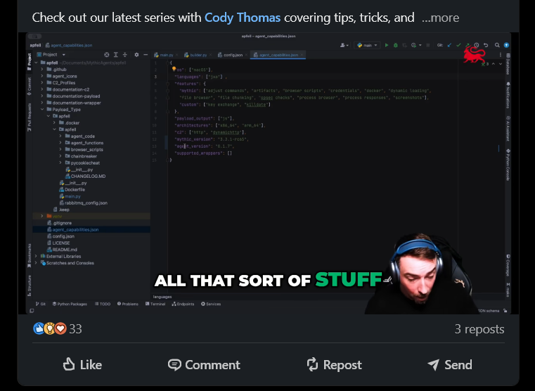
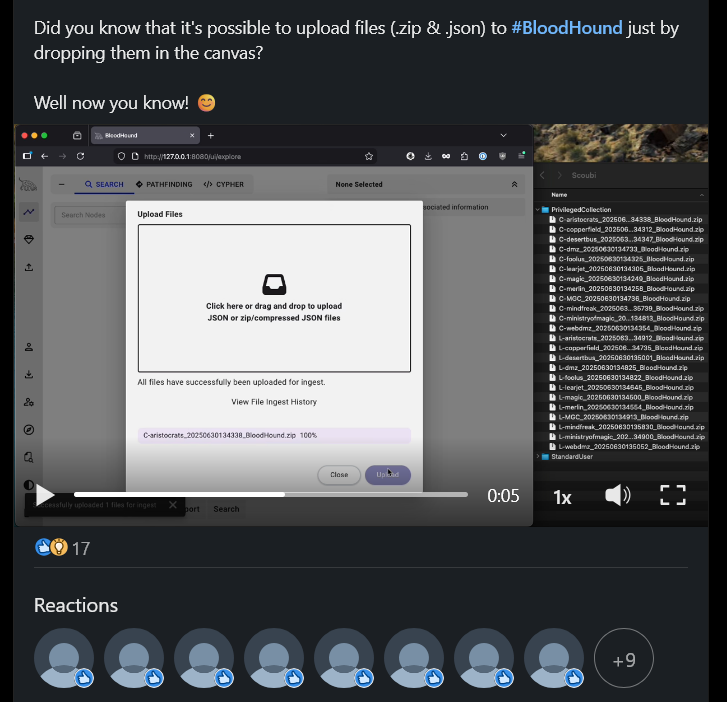

Custom C2 Mythic for Developers: 3rd Party Service Agents
Post-Exploitation Activities
With SpecterOps // Creator and Maintainer of BloodHound the attack-path management.
High-end architecture of C2 infrastructure, covers between container and the servers uses technologies like RabbitMQ for messaging, GraphQL APIs for big-data access, and PostgreSQL for state tracking.


Visit SpecterOps YouTube for more, and pls watched the lists of Video serries for Mythic for Developers:
Mythic for Developers
Description: Tips and tricks for creating or customizing agents and anything else related to Mythic C2.
Part 01:
Part 02:
Part 03:
Part 04:
Part 05: Mythic for Developers, 3rd Party Service Agents
And more waiting in the coming future.
What is Mythic
Mythic is a multiplayer, command and control platform for red teaming operations. Designed to facilitate a plug-n-play architecture where new agents, communication channels, and modifications.
Some of the Mythic project's main goals are to provide quality of life improvements to operators, improve maintainability of agents, enable customizations, and provide more robust data analytic capabilities to operations.
Why Mythic for C2
From SpecterOps:
Mythic is an open-source Command and Control (C2) framework designed around a microservice architecture. It uses Docker Compose with a Golang server, RabbitMQ message broker, PostgreSQL database, and a React web interface to bring extensibility and quality of life features to operators. Mythic's interface brings multi-user support, customized user preferences, RBAC controls, OPSEC checks, dynamic tab completion, and a powerful scripting capability that enables dynamic tables, file previews, and more in line with your task output.
Mythic puts power in the hands of the operator with Python scripting libraries, Jupyter Notebooks, an interactive GraphQL explorer (via Hasura), and a custom eventing engine. Mythic doesn't include any agents or communication profiles; they're all dynamically installed based on your needs.
Mythic supports agents across macOS, Linux, and Windows, along with more unique requirements like Webshells, Chrome extensions, and even agents to interact with 3rd party services like BloodHound, Ghostwriter, Nemesis, and VECTR.
- When an agent sends back data, it's already shaped, tagged, and ready to be reasoned about. Huge difference once you're past toy ops and you care about state, timing, and not losing context after 40 commands. It feels like someone actually sat down and thought about operator cognition.
- Lifecycle, message formats, and boundaries. Designed with low-level behavior in mind, memory handling, task execution flow, how data moves between processes without accidentally lighting up half of AMSI's heuristics.
- Able to swap transport logic without rewriting the world, or test a new idea without poisoning the rest of your setup.
Safety with Mythic C2
Mythic also incorporates MITRE ATT&CK mappings into the standard workflow. All commands can be tagged with ATT&CK techniques, which will propagate to the corresponding tasks issued as well.
In a MITRE ATT&CK Matrix view (and ATT&CK Navigator view), operators can view coverage of possible commands as well as coverage of commands issued in an operation.
Thanks, much love from https://specterops.io/